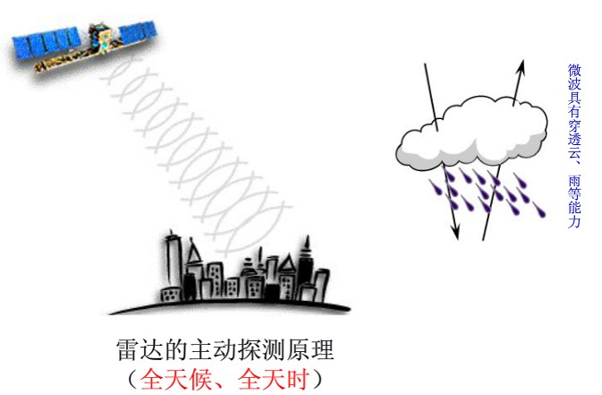
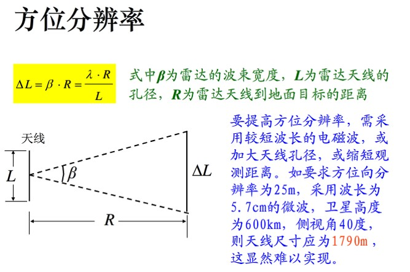
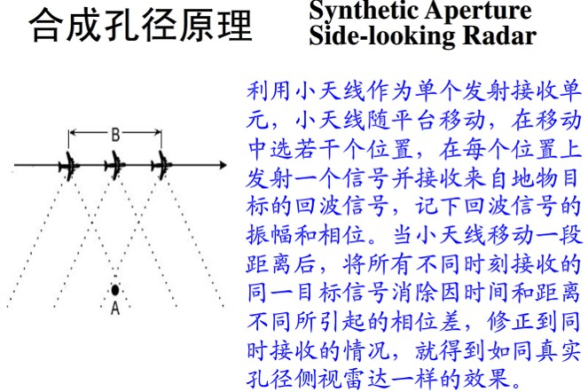
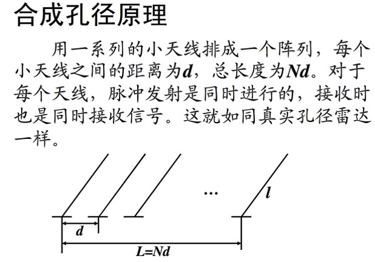

微波遥感与成像
一、微波遥感的特点
微波遥感：指通过传感器获取从目标地物发射或反射的微波辐射，经过判读处理来认识地物的技术。
微波遥感的特点： 1）能全天候、全天时工作； 2）对某些地物具有特殊的波谱特征； 3）对冰、雪、森林、土壤等具有一定穿透力； 4）对海洋遥感具有特殊意义； 5）分辨率较低，但特性明显。
二、微波遥感方式和传感器
几种光机扫描仪:
1、主动微波遥感：指通过向目标物发射微波并接收其后向散射信号来实现对地观测遥感方式。
2、被动微波遥感: 通过传感器，接收来自目标地物发射的微波，而达到探测目的的遥感方式，称被动微波遥感。
主动微波遥感:
（1）雷达Radar(Radio Direction And Range)
雷达的用途：用于测定目标的位置、方向、距离和运动目标的速度。
雷达的工作方式：由发射机通过天线在很短时间内，向目标地物发射一束很窄的大功率电磁波脉冲，然后用同一天线接收目标地物反射的回波信号而进行显示的一种传感器。
（2）侧视雷达（Side Looking Radar)
侧视雷达的天线不是安装在遥感平台的正下方，而是与遥感平台的运动方向形成角度，朝向一侧或两侧倾斜安装，向侧下方发射微波，接收回波信号，其工作原理如下图所示：
侧视雷达的分辨力可分为：
1）距离分辨力（垂直于飞行的方向）俯角越大，距离分辨力越低；俯角越小，距离分辨力越大。要提高距离分辨力，必须降低脉冲宽度。但脉冲宽度过低则反射功率下降，实际应用采用脉冲压缩的方法。
2）方位分辨力（平行于飞行方向）。要提高方位分辨力，只有加大天线孔径、缩短探测距离和工作波长。
思考题:
一给定的机载侧视雷达系统SLAR的天线束宽1.8毫弧（mrad），求解距离为6km和12km时该系统的方位分辨率？
为什么要采取侧视雷达而不采取正视雷达？
（3）合成孔径侧视雷达（SAR）:合成孔径侧视雷达的方位分辨力与距离无关，只与天线的孔径有关。所以，可用于高轨卫星。天线越小，方位分辨力越高。
 
思考题:
为什么要采用合成孔径雷达而不采用真实孔径雷达？